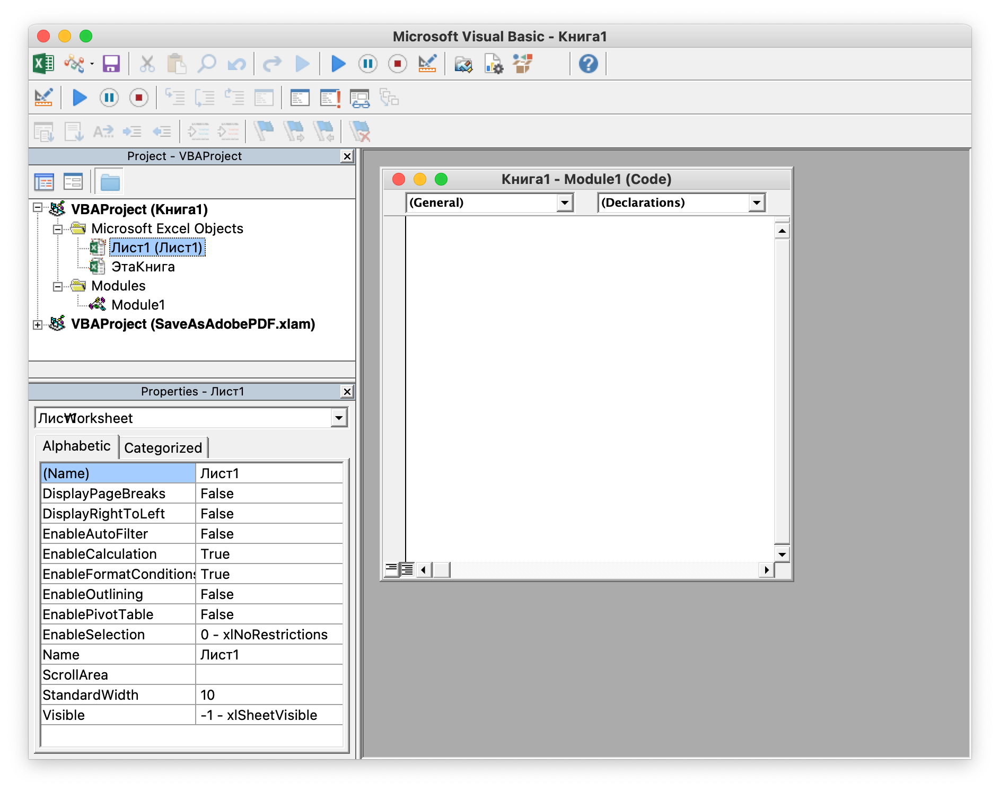
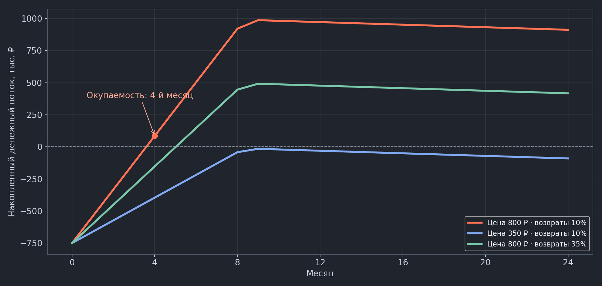
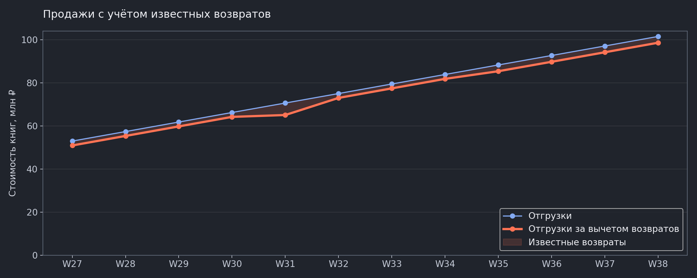
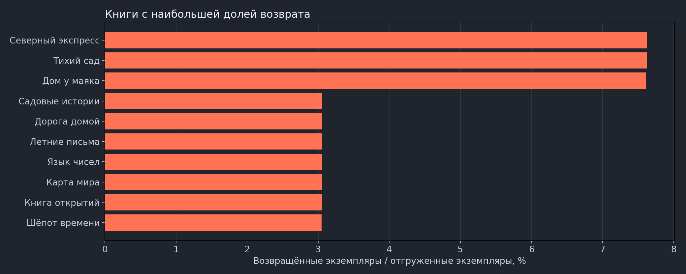

Как запустить скрипт
Открыть инструкцию со скриншотом · Excel VBA
Excel: список макросов пустой, код красный
Сначала проверьте язык. Excel запускает VBA. Если в ответе модели есть function, const, SpreadsheetApp — это Google Apps Script; в редактор Excel его вставлять нельзя. Отступы и табуляция это не исправят.
- В переключателе справа сверху выберите Excel · VBA.
- В нужном кейсе раскройте «Полный VBA-код для Excel» и нажмите «Скопировать весь код». Не копируйте промпт вместо кода.
- В Excel откройте проект скачанной книги → Insert / Вставка → Module / Модуль. Создайте новый обычный модуль и вставьте код. Если ранее вставили Apps Script в другой модуль этой учебной книги, удалите именно ошибочно вставленный текст, чтобы он не мешал компиляции; свои остальные модули не трогайте.
- Сохраните .xlsm. Выполните Debug / Отладка → Compile VBAProject, если пункт доступен. Откройте Разработчик → Макросы и выберите процедуру нужного кейса.
Для первой книги quality.xlsm: запускайте QualityAudit. В коде должна быть процедура Public Sub QualityAudit() без аргументов и закрывающий End Sub. Она находится в обычном Module проекта quality.xlsm, не в листе и не в ThisWorkbook.
Если используете собственный ответ ИИ: имя процедуры может отличаться. VBA ищет Public Sub Имя() без аргументов; Google — функцию function имя() { … }. В нашем промпте теперь закреплено точное имя. В Google для первого кейса это qualityAudit; код с validateSales запускается как validateSales в редакторе Apps Script, а не как макрос Excel.
Если язык уже правильный: проверьте, что скопирован весь блок кнопкой копирования ответа модели, с сохранением строк, без внешних тройных обратных кавычек. Не переносите код через мессенджер или редактор форматированного текста. При ошибке компиляции передайте ИИ точный текст ошибки и выделенную строку, сохранив выбранный язык.

Insert → ModuleВставьте весь код в окно модуляНа скриншоте Excel для Mac; Module1 уже создан. Windows: Alt+F11. Mac: Option+F11 (иногда с Fn). Через меню: Разработчик → Visual Basic → Insert / Вставка → Module / Модуль.
- Скачайте учебную книгу .xlsm и откройте её в настольном Microsoft Excel. Формат уже поддерживает макросы; переименовывать или пересохранять XLSX не нужно. В заготовке ещё нет VBA-кода — его вставляем следующим шагом.
- Windows: Alt+F11. Через меню: Разработчик → Visual Basic. На Mac: Разработчик → Visual Basic; сочетание Option+F11 может требовать Fn.
- Выберите VBAProject нужной книги → Insert / Вставка → Module / Модуль.
- Вставьте полный код в большое окно модуля. Не в лист и не в ThisWorkbook.
- Вернитесь в Excel: Разработчик → Макросы → нужная процедура → Выполнить.
Макросы не запускаются: что сделать
Excel открыт в браузере? VBA там не запускается. Выберите «Открыть в классическом приложении» / Open in Desktop App или откройте скачанный .xlsm в установленном Excel для Windows или Mac. Расширение файла само по себе не добавляет VBA в веб-версию. Если настольного Excel нет — установите его с доступной вам лицензией либо переключите этот тренажёр на Google Таблицы и используйте Apps Script.
Не видно вкладку «Разработчик»? Windows: Файл → Параметры → Настроить ленту → Разработчик. Mac: Excel → Настройки → Лента и панель инструментов → Разработчик. В Windows редактор также открывается Alt+F11.
Windows: код вставлен, но запуск отключён. Файл → Параметры → Центр управления безопасностью → Параметры центра → Параметры макросов. Выберите отключение VBA-макросов с уведомлением, чтобы разрешать запуск для проверенной книги при открытии. Если появляется жёлтая панель, разрешите содержимое только этой проверенной учебной книги. Не включайте безусловный запуск всех макросов.
Красная панель «Макросы заблокированы» после скачивания? Закройте Excel. Если это разрешено правилами организации, в Проводнике Windows нажмите правой кнопкой на конкретном .xlsm → Свойства → Общие → Разблокировать → Применить, затем откройте книгу снова. Проверьте происхождение файла и код до разрешения запуска. Если пункта нет или настройка заблокирована администратором, обратитесь в ИТ-службу; настройки организации не обходите.
Mac: Excel → Настройки / Preferences → Безопасность / Security (название зависит от версии) → отключение макросов с уведомлением. Откройте книгу заново и разрешите макросы для этой проверенной книги, если появляется запрос.
Макроса нет в списке? Вставьте полный код в обычный Module проекта скачанной книги, а не в лист или ThisWorkbook. Сохраните .xlsm. Выберите процедуру текущего кейса: QualityAudit, ModelAudit, BuildDashboard или BuildPartner. В заготовке нет заранее встроенного макроса.
Справка Microsoft: Excel в браузере · настройки Windows · настройки Mac · блокировка скачанных файлов.
- Импортируйте XLSX в нативную Google Таблицу.
- Расширения → Apps Script.
- Замените стартовый код полным .gs-кодом выбранного кейса и сохраните.
- Выберите нужную функцию рядом с «Выполнить» и запустите.
- Проверьте права, вернитесь к таблице и откройте OUT_-листы.
Расширения → Apps Script → вставить код → сохранить → выбрать функцию → Выполнить. Пошаговые скриншоты вашей версии Google Таблиц добавим после записи демонстрации.
Скачайте учебную книгу, выберите среду и скопируйте промпт. В чат достаточно передать структуру и несколько обезличенных строк; весь объём обработает скрипт в вашей таблице.
Найти ошибки до расчёта роялти
В пятницу пришла выгрузка на 60 000 строк. Один заказ попал дважды, цена в нескольких строках стала текстом, а выручку где-то поправили вручную. Итоговая сумма выглядит правдоподобно — глазами ошибку не найти.
Бизнес-цель: Не отправить автору расчёт по задвоенным или испорченным продажам.
| A | B | C | D | E | F | |
|---|---|---|---|---|---|---|
| 1 | OrderID | Book | Channel | Units | Price | Revenue |
| 2 | ORD-000040 | Тихий сад | Ozon | 6 | 349 | 2094 |
| 3 | ORD-000040 | Северный экспресс | WB | 7 | 449 | 3143 |
| 4 | ORD-000121 | Северный экспресс | Ozon | 3 | 449 | 1347 |
| 5 | ORD-000301 | Северный экспресс | Ozon | 1 | 449 | 549 |
Что берёт на себя скрипт: Одна формула найдёт одно условие. Здесь нужен повторяемый проход: проверить несколько правил, создать журнал адресов, скопировать данные и выделить конкретные ячейки. В следующий месяц — тот же запуск на новой выгрузке.
XLSM — заготовка с поддержкой макросов. Код ещё не встроен: вставьте полный VBA-код ниже и сохраните книгу.
XLSX сохраняет число, записанное текстом. При импорте CSV оно может преобразоваться — состав найденных ошибок изменится.
Копируется текст выбранного режима. DeepSeek откроется в новой вкладке.
Провести кейс от начала до результата
- Скачайте quality.xlsx, сохраните рабочую копию .xlsm.
- Получите код по промпту. Для повторения скачайте готовый модуль quality.bas; вставляйте весь модуль, включая вспомогательные функции.
- Запустите QualityAudit; в Google — qualityAudit из quality.gs.
- Откройте OUT_Issues, перейдите по SourceRow в OUT_Checked. Проверьте причину, а не только цвет.
- Исправьте одну исходную ошибку осознанно и повторите запуск: журнал должен измениться, исходные строки не исчезают.
Что должно появиться после запуска · пример результата
| A | B | C | |
|---|---|---|---|
| 1 | Строка | Поле | Причина |
| 2 | 42 | OrderID | Повтор идентификатора |
| 3 | 122 | Price | Число хранится текстом |
| 4 | 302 | Revenue | Не совпадает с Units × Price |
- Количество строк OUT_Checked совпало с Sales.
- Каждая строка журнала указывает конкретную исходную строку и поле.
- Повтор без изменения входа не удваивает журнал.
Полный код для выбранной среды
Учебная политика проверки: возвраты описаны отдельной колонкой Returned; отрицательные Units считаются ошибкой. В вашей схеме правила могут отличаться. Лимит 100 000 — ограничение примера, не обещание скорости сервиса.
Проверить формулы в модели книги
В модели 1 200 строк. Расчётный столбец должен использовать одну согласованную формулу. В отдельных ячейках появились дополнительный коэффициент, фиксированное число и прибавка к результату. Нужно найти эти адреса и проверить основания изменений.
Бизнес-цель: Перед утверждением тиража понять, какие расчётные ячейки требуют объяснения.
| A | B | C | |
|---|---|---|---|
| 1 | Адрес | Что видно в ячейке | Что в строке формул |
| 2 | E46 | расчёт | =B46*C46*(1-D46) |
| 3 | E47 | расчёт | =B47*C47*(1-D47)*1.18 |
| 4 | E88 | 175000 | число вместо формулы |
| 5 | E119 | расчёт | =B119*C119*(1-D119)+5000 |
Что берёт на себя скрипт: Скрипт читает именно формулы, а не только их значения: сравнивает относительную структуру, находит ручные константы и выводит адреса для разбора. Формулы на листе помогают считать; здесь проверяем сам способ расчёта сразу по всему диапазону.
XLSM — заготовка с поддержкой макросов. Код ещё не встроен: вставьте полный VBA-код ниже и сохраните книгу.
Для аудита формул используйте XLSX: CSV не сохраняет структуру книги и типы ячеек.
Копируется текст выбранного режима. DeepSeek откроется в новой вкладке.
Провести кейс от начала до результата
- Откройте model.xlsx. Сначала покажите нормальную формулу в E2 и разрешённые входы B:D.
- Запустите ModelAudit в Excel. В Google после импорта — modelAudit.
- По адресу из OUT_ModelAudit найдите исходную ячейку и посмотрите строку формул.
- Обсудите: коэффициент может быть согласованной поправкой. Запросите объяснение, не исправляйте автоматически.
- На копии верните согласованный шаблон в отклоняющиеся ячейки и запустите повторно.
Что должно появиться после запуска · пример результата
| A | B | C | |
|---|---|---|---|
| 1 | Адрес | Сигнал | Что сделать |
| 2 | Model!E47 | Дополнительный ×1.18 | Запросить обоснование |
| 3 | Model!E88 | Константа | Восстановить происхождение числа |
| 4 | Model!E119 | Другая структура | Сравнить с согласованной логикой |
- У каждой находки есть точный адрес и текст исходной формулы.
- Обычные исходные значения B:D не попали в список подозрительных констант.
- Нормальная формула и вариант с *1 не помечены; данные в Model не изменены.
Полный код для выбранной среды
Шаблон задан заранее владельцем модели. Алгебраически эквивалентная, но иначе записанная формула тоже попадёт на ручную проверку. Именованные диапазоны, внешние ссылки и сложные модели требуют адаптации. Значения в XLSX пересчитываются при открытии в Excel/Google.
Когда окупится выпуск книги?
Издательство планирует тираж новой книги. До начала продаж нужно оплатить печать, подготовку и стартовое продвижение. Редактор хочет проверить, как цена, спрос и возвраты повлияют на срок окупаемости. Нужна модель, в которой можно менять исходные параметры и сразу видеть новый расчёт и график.
Бизнес-цель: Сравнить условия выпуска книги и определить первый месяц возврата первоначальных вложений.
| A | B | C | |
|---|---|---|---|
| 1 | Параметр | Значение | Единица |
| 2 | Тираж | 5000 | экземпляры |
| 3 | Розничная цена | 800 | руб./экз. |
| 4 | Скидка торговому партнёру | 0.45 | доля |
| 5 | Печать одного экземпляра | 100 | руб./экз. |
| 6 | Подготовка книги | 150000 | руб., до начала продаж |
| 7 | Стартовое продвижение | 100000 | руб., до начала продаж |
| 8 | Ежемесячные расходы | 5000 | руб./месяц, все 24 месяца |
| 9 | Роялти с поступлений | 0.1 | доля |
| 10 | Спрос первого месяца | 600 | отгруженные экземпляры |
| 11 | Ежемесячное изменение спроса | 0 | доля: от -1 до 1 |
| 12 | Доля возврата | 0.1 | доля отгруженных экземпляров |
Что берёт на себя скрипт: Один раз создаёт связанные листы с формулами и диаграммой. После этого пересчёт выполняет сама таблица: скрипт повторно запускать не нужно. Любой показатель можно проверить по формуле и исходным ячейкам.
XLSM — заготовка с поддержкой макросов. Код ещё не встроен: вставьте полный VBA-код ниже и сохраните книгу.
Копируется текст выбранного режима. DeepSeek откроется в новой вкладке.
Провести кейс от начала до результата
- Скачайте книгу с параметрами Inputs.
- Получите скрипт или скопируйте полный подготовленный код.
- Запустите BuildFinanceModel / buildFinanceModel один раз.
- Откройте Summary: срок окупаемости — 4-й месяц.
- Измените цену Inputs!B3 с 800 на 350. Скрипт повторно не запускайте: появится «За 24 месяца не окупается», график перестроится.
- Верните цену 800 и измените возвраты Inputs!B12 с 10% на 35%: срок — 6-й месяц. Проверьте формулу в Calc!K6.
Что должно появиться после запуска · пример результата
| A | B | C | |
|---|---|---|---|
| 1 | Сценарий | Первый месяц окупаемости | Поток за 24 месяца |
| 2 | Цена 800 ₽, возвраты 10% | 4 | 912 000 ₽ |
| 3 | Цена 350 ₽, возвраты 10% | Не окупается | −90 375 ₽ |
| 4 | Цена 800 ₽, возвраты 35% | 6 | 417 000 ₽ |
- При исходных параметрах: вложения 750 000 ₽, окупаемость в 4-м месяце, итоговый поток 912 000 ₽.
- Цена 350 ₽: за 24 месяца окупаемости нет. Возвраты 35% при цене 800 ₽: окупаемость в 6-м месяце.
- Изменения параметров пересчитывают формулы без повторного запуска. Повторный запуск сохраняет Inputs и оставляет одну диаграмму.
Проверка без повторного запуска. На листе Inputs измените цену B3 с 800 на 350 ₽. Срок окупаемости и линия графика должны измениться сразу. Верните 800 ₽ и измените долю возврата B12 с 10% на 35%: окупаемость переместится с 4-го на 6-й месяц.

Сравнение рассчитано по формулам учебной модели. На Inputs рядом с параметрами график показывает текущий сценарий; изменение параметров передвигает линию.
Проверьте расчёт: Inputs → Calc → Summary. Например, Calc!K6 содержит накопленный поток четвёртого месяца, а не число, вычисленное скриптом заранее.
Полный код для выбранной среды
Учебные допущения: возвращённые экземпляры не продаются повторно; деньги поступают в месяц отгрузки; налоги, НДС, кредит и отсрочки не учитываются. Возвраты — ожидаемая доля, поэтому расчётные количества могут быть дробными. Окупаемость означает первое пересечение нуля. Excel-скрипт включает автоматический пересчёт приложения.
Растут ли продажи с учётом возвратов?
Коммерческий директор издательства получил две выгрузки: 100 000 строк отгрузок книг торговым точкам и 20 000 строк возвратов. Отгрузки учтены по коду точки в системе продаж, возвраты — по её складскому коду. В отдельном справочнике 60 точек указаны оба кода и регион. Директору нужен недельный отчёт: сколько книг отгрузили в денежном выражении, сколько вернулось и какая сумма осталась после вычета возвратов. Затем он хочет узнать, какие книги возвращают чаще и по каким причинам.
Бизнес-цель: Определить, увеличилась ли стоимость проданных книг после вычета известных возвратов, и найти книги с высокой долей возврата.
В системе продаж точка обозначена P001, на складе — WH701. Справочник подтверждает, что это одна точка в регионе «Центр». Сопоставлять её по адресу не требуется.
| ShipmentWeek | OutletID | BookID | Book | Units | GrossAmount |
|---|---|---|---|---|---|
| 2026-W27 | P001 | B001 | Тихий сад | 10 | 3000 |
| 2026-W27 | P001 | B002 | Северный экспресс | 11 | 3520 |
| ShipmentWeek | ReturnWeek | ReturnPointCode | BookID | Units | ReturnAmount | Reason |
|---|---|---|---|---|---|---|
| 2026-W27 | 2026-W28 | WH701 | B001 | 6 | 1800 | Повреждение |
| OutletID | ReturnPointCode | Region |
|---|---|---|
| P001 | WH701 | Центр |
| P002 | WH702 | Северо-Запад |
ShipmentWeek — неделя исходной отгрузки. В возвратах она известна из связанного документа продажи. ReturnWeek — неделя оформления возврата. Units — экземпляры; GrossAmount и ReturnAmount — рубли. BookID — единый код книги. Одна строка — позиция документа; одинаковые значения могут относиться к разным операциям.
Что берёт на себя скрипт: Связывает две выгрузки через справочник, проверяет соответствие ключей, считает показатели по неделям и регионам и строит график. Второй вопрос использует те же данные для анализа книг и причин возврата.
XLSM — заготовка с поддержкой макросов. Код ещё не встроен: вставьте полный VBA-код ниже и сохраните книгу.
Один набор данных — два вопроса
Сначала получите недельный отчёт. Затем выберите второй вопрос: заголовки и правила связи останутся теми же, изменится аналитическая задача.
Заголовки и правила связи · адаптировать к своим данным
Для своей книги скопируйте заголовки всех нужных листов, укажите общие ключи и сформулируйте вопрос обычными словами. Одних заголовков недостаточно, если из них неясны значения полей и связь таблиц. Вместо всей выгрузки можно передать несколько обезличенных примеров. Полученный код проверяйте на копии книги и сверяйте итоговые суммы.
Подготовленный код ниже предназначен для учебной книги. Он содержит две отдельные процедуры; вставьте полный модуль один раз и запускайте процедуру выбранного вопроса.
Копируется текст выбранного режима. DeepSeek откроется в новой вкладке.
Провести кейс от начала до результата
- Откройте учебную книгу и сопоставьте заголовки трёх листов.
- Скопируйте заполненный промпт первого вопроса и получите код.
- Вставьте полный код в выбранную среду и запустите отчёт.
- Проверьте суммы и две линии графика.
Что должно появиться после запуска · результаты на учебных данных
| Неделя | Отгрузки, ₽ | Возвраты, ₽ | За вычетом возвратов, ₽ |
|---|---|---|---|
| 2026-W27 | 52990240 | 2035040 | 50955200 |
| 2026-W31 | 70661380 | 5567720 | 65093660 |
| 2026-W38 | 101585420 | 2915540 | 98669880 |
Первая неделя: 52 990 240 − 2 035 040 = 50 955 200 ₽. Последняя неделя: 101 585 420 − 2 915 540 = 98 669 880 ₽. Рост после вычета известных возвратов — 93.6%. На пятой неделе объём возвратов увеличивается, но к концу периода рост сохраняется.
Разбивка по четырём регионам находится на отдельном листе OUT_Regions. Это срез известных возвратов на 27.09.2026; будущие возвраты в него не входят.

| BookID | Книга | Отгружено, экз. | Возвращено, экз. | Доля возврата |
|---|---|---|---|---|
| B002 | Северный экспресс | 72916 | 5562 | 7.6% |
| B001 | Тихий сад | 72919 | 5562 | 7.6% |
| B003 | Дом у маяка | 72918 | 5551 | 7.6% |
| B021 | Садовые истории | 72903 | 2226 | 3.1% |
| B006 | Дорога домой | 72920 | 2226 | 3.1% |
| BookID | Книга | Причина | Возвращено, экз. | Стоимость, ₽ |
|---|---|---|---|---|
| B002 | Северный экспресс | Повреждение | 2793 | 893760 |
| B002 | Северный экспресс | Излишек запаса | 1108 | 354560 |
| B002 | Северный экспресс | Отказ покупателя | 554 | 177280 |
| B002 | Северный экспресс | Полиграфический брак | 554 | 177280 |
| B002 | Северный экспресс | Ошибка комплектации | 553 | 176960 |
Доля возврата считается по экземплярам: возвращено / отгружено. Рядом остаётся объём отгрузок, чтобы высокий процент на малом числе продаж не вводил в заблуждение. OUT_Books содержит все 24 книги; диаграмма показывает первые 10. OUT_Reasons показывает причины по убыванию числа экземпляров: наиболее частая находится первой. Всего — пять причин для каждой книги, в том числе причины с нулевым количеством.

Изображения рассчитаны по прилагаемой учебной книге. Скрипт строит диаграмму заново в Excel или Google Таблицах; оформление приложения может отличаться.
Полный код для выбранной среды
Учебные данные вымышлены. Срез на 27.09.2026 включает только известные возвраты; поздние возвраты могут изменить результат, особенно за последние недели. Возвраты относятся к исходным отгрузкам. Разность денежных сумм — не прибыль. Скрипт ограничен согласованными схемой, периодом и правилами; новые данные требуют проверки.
Преобразовать план под формат партнёра
Внутренний план хранит каналы в отдельных столбцах: одна строка на книгу. Партнёр ждёт одну строку на пару «книга — канал», только активные позиции с положительным количеством. Каждый месяц менеджер вручную копирует столбцы, склеивает строки и пропускает ошибки.
Бизнес-цель: Сдать файл без ручного перекладывания столбцов и без потери отклонённых книг.
| A | B | C | D | E | F | |
|---|---|---|---|---|---|---|
| 1 | ISBN | Book | Status | Price | Ozon | WB |
| 2 | 9785000000018 | Тихий сад | active | 349 | 12 | 7 |
| 3 | 9785000000025 | Дом у маяка | paused | 449 | 5 | 3 |
| 4 | 9785000000032 | Игры разума | active | 540 | 0 | 4 |
Что берёт на себя скрипт: Названия столбцов каналов превращает в значения строк. Проверяет книги, отбирает нужные каналы, сохраняет отклонения отдельно и готовит CSV.
XLSM — заготовка с поддержкой макросов. Код ещё не встроен: вставьте полный VBA-код ниже и сохраните книгу.
Копируется текст выбранного режима. DeepSeek откроется в новой вкладке.
Провести кейс от начала до результата
- Откройте partner.xlsx и сравните формат Wide с форматом, который запросил партнёр.
- В Google запустите buildPartner из полного partner.gs. В Excel — BuildPartner из partner.bas.
- Сверьте OUT_Partner и OUT_Rejected: отклонённые позиции не должны потеряться молча.
- Google: выполните downloadPartnerCSV и нажмите Download в диалоге. Excel: выполните ExportPartnerCSV и выберите путь.
- Откройте CSV через импорт: ISBN — текст. В Excel разделитель CSV зависит от системной локали; выберите его по предпросмотру. В Google-экспорте примера разделитель ;.
Что должно появиться после запуска · пример результата
| A | B | C | D | E | F | |
|---|---|---|---|---|---|---|
| 1 | ISBN | Книга | Канал | Шт. | Цена | Выручка |
| 2 | 9785000000018 | Тихий сад | Ozon | 12 | 349 | 4188 |
| 3 | 9785000000018 | Тихий сад | WB | 7 | 349 | 2443 |
| 4 | 9785000000032 | Игры разума | WB | 4 | 540 | 2160 |
- В OUT_Partner только Ozon/WB, только active и Units > 0.
- Проблемная книга целиком в OUT_Rejected: ни один её канал не попал в выгрузку.
- ISBN сохранён без научной записи; число строк и сумма CSV совпали с OUT_Partner.
- Повторный запуск не удвоил строки; отмена сохранения Excel не создаёт файл.
Полный код для выбранной среды
Учебная проверка ISBN проверяет длину/цифры, а не существование книги или контрольную сумму. Первый активный экземпляр ISBN сохраняется, последующие отклоняются. Дубликат первой некорректной записи требует ручного решения. CSV-экспорт Excel использует системный разделитель.